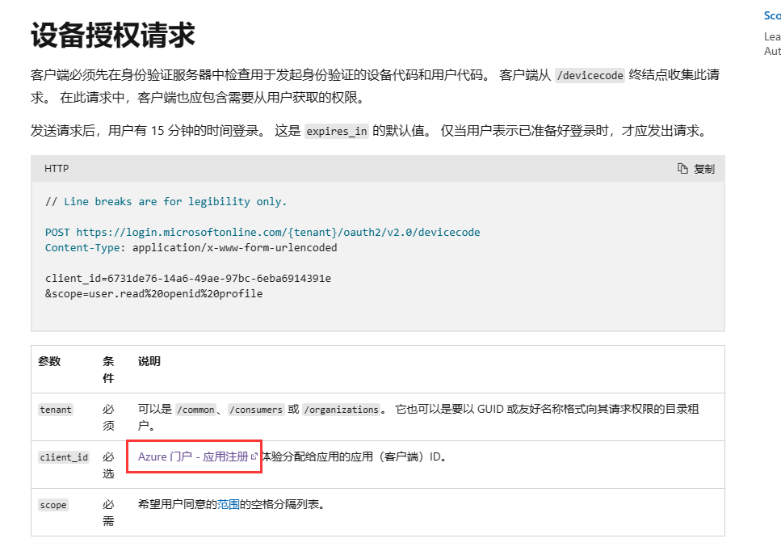

微软的OAuth登录
警告：该种登录方式是所有登录方式中最为安全的一种方式，如果你不确定你需要哪种方式来写代码，请务必使用此种方式！
好了好了，又是我们最为关键的一步：微软OAuth登录啦！
想必吼，各位应该有使用过HMCL、BakaXL等一系列较火的启动器吧！那么这些启动器都有一个特点，这个特点就是：【使用的登录微软的方式与上一章所见的完全不同！】
他们是怎么做到的呢？首先蛤，让我先给各位缕一缕思路哈！
他们调用系统默认浏览器打开了一个网址，网址为【https://www.microsoft.com/link 】这个网址，当然了，现在可别打开这个网址哦！然后，启动器会弹出一个代码窗口，要求我们将该代码填入到link网址中显示的输入框内。
紧接着，启动器开始静默，随之而来的就是在浏览器中操作的过程了！
浏览器中，我们首先登录一次微软账号【就是简单的输入账号密码】，然后，开始判断我们是否为本账号的主人【要求输入Windows PIN码，也就是开机密码】，再接着，要求我们同意该启动器对Xbox等若干账号的访问权。
等一切都做好之后，网址上弹出了【大功告成，现在可以安全的返回启动器】时，启动器将会自动执行下一步，然后，就自动登录成功了！
其实，在做这一个步骤的时候，我们首先需要弄懂2点：
- 启动器如何弹出应用代码供我们输入进微软官网的输入框。
- 启动器如何静默执行直到用户已完成网页登录的全部请求。
这是我们要讨论的两个问题。
首先，让我们先来看个网址【因为我总觉得，有权威性的文档总要比我说的有效得多。】，该网址出处为wiki.vg。【点我】，我当然直到这个网址是英文的，因此这里是中文的【点我】
然后，下面的过程我将用截图来说明了！
请看这里：
我们进入中文的wiki.vg网址，然后单击我图片框中显示的那个网址，然后，我们再接着往下滑，直到找到一个名为AZure用户注册的地方，大概在这：

在点击这个网址时，很可能因为这是你第一次点击而让你登录一次微软账号，那么没逝，我们登录即可。随后，我们便可以进入这里，按照我的步骤走吧：
我猜各位现在应该看到的是【应用注册】界面，那这就证明我们来对地方了！
下图，由于我之前已经注册过一个Little Limbo Launcher了，因此我将会点击上方的【新注册】按钮来依次教大家如何注册哦！

好了，然后，我们就可以使用新注册的账号对我们将要分发的启动器注册一个应用程序了！

好了，现在立刻进入我们的启动器里面，我的启动器名称暂时命名为【Test Launcher】，不必在意这些细节哦！
当我们注册完毕之后，点进入启动器配置中，随后，我们能够发现一个AZure Client ID，这个ID各位千万不允许泄漏给他人，同样的，假如我们制作的是开源启动器，我们也要将此类用privacy的单独的类进行ignore哦！
在左侧栏点击【身份验证】，然后点击最上面的【添加平台】，在右边选择Web，然后在重定向URI中填入https://www.microsoft.com/link，随后点击下面的访问令牌打勾。前通道注销URI暂时不用填写。
此时此刻，我们如果按照正常流程来走的话，我们就应该可以自动重定向到这个网址了，但是，此时此刻，我们还没有为该应用程序设定是否允许公共的桌面应用对此进行流控制权限，我们需要设置一个。
随后，我们需要往下滑，找到下面这一列：

这个就是了！好的，那么接下来，我们就要点击左侧的【品牌打造与属性】进行自定义我们的应用程序啦！
首先点进属性一栏，我们能看到以下几栏。
- 首先：我们需要输入我们的启动器名称，就是在最顶上的那个啦！【必填，多半是在你生成启动器时就早已生成好了名称。】
- logo徽标：需要上传一个logo图标，这里我没用，但大家可以使用而且是必须使用一个你自己启动器的图标上去。【必填】
- 主页URL：写你启动器的主页即可，如果是gitcode，就写gitcode啦，如果是github pages：就写github pages。【可选填，以下可选填均指如果没有则不用填】
- 服务条款：这个不用我多说了，每个应用程序都有的，这里填入你的网址。【可选填】
- 隐私声明：也不用多说了，填入许可证即可。【可选填】
- 服务管理参考：这个也不用多说了，左侧名称处有一个灰色的感叹号，可以自行查看。【可选填】
- 内部备注：写上你对该应用程序的备注即可，可以写【这是LLL启动器的AZure注册！】也可以写别的。【必填】
- 发布者域：配置你所写的域名。【该处不用填，因为市面上大多数启动器都无此功能。】
请看吧：
按照上面的配置即可！
此时此刻，我们的AZure账号就算是正式注册完毕了！那么，我们就需要开始完成我们上述的第一步了！【启动器如何弹出应用代码供我们输入进微软官网的输入框】了！
在这里给大家提个醒，根据该网址的信息，我们可以判定，微软的Client ID需要申请才可以使用，因此，我们需要填写表单，向微软申请我们的第三方启动器可以被允许获取微软，然后此时我们才可以使用登录。否则，使用未经允许的Client ID将会触发请求404的风险。申请表单网址点我
在获取了我们的个人Microsoft AZure Client ID之后，我们应该怎么获取用户ID？
首先，我们在控件图纸上新建一个按钮控件吧！噢，按钮上一次已经建立好了啊！
那么我们来看，首先按钮建立好了是一个问题，我们这次需不需要点击【添加账号】来添加呢？答案是不必的！我们大可以直接点击【微软OAuth】登录来直接达到登录的效果。
那么，此时可能又会有人要问了：我看别的启动器都是在浏览器登录之后，自动登录完成的啊？
很简单，只需要设置一个Timer控件随时随地的对目标网址Get或Post，一旦成功则立刻返回就可以了！
那么，这个设置Timer控件的任务就交给大家做练习了！我先教各位如何通过Client ID获取用户代码，然后对此进行Post获取目标json了！
首先，我们双击按钮：微软OAuth登录。在我们的微软OAuth登录的方法前端设置一个常量，这个常量叫做
const
devicecode = 'https://login.microsoftonline.com/consumers/oauth2/v2.0/devicecode?mkt=zh-CN';
这个常量主要是获取用户代码的！
然后，我们再设置一些请求头吧：
【ps：此处将会设置各位的Client_ID，如果各位打算开源，则你不能将ID泄漏给别人噢！】
var clientID := MS_CLIENT_ID; //此处填上你们的ClientID就好了，如果你的启动器打算开源，你不可以将该ID泄漏给别人看噢！
TTask.Run(procedure begin//设置一个任务，调取信息。
//该种方式为设置请求头。可以看到我们再scope块里设置了XBoxLive.signin以及offline_access。
//其中，XboxLive.signin表示的是可以用于登录微软，offline_access表示是否生成一个刷新令牌。中间的%20表示一个空格。
var key1 := Concat('client_id=', clientID, '&scope=XboxLive.signin%20offline_access');
try
var str := Account.GetHttpf(key1, devicecode); //这里调用我们上次写的GetHTTPf。将前面设置的const常量与key1填入即可。
//这里，我们的str就是我们的登录所需的json了，我们需要提取出里面的用户代码数据。
var json := TJsonObject.ParseJSONValue(str) as TJsonObject; //将str转换成json
var usercode := json.GetValue('user_code').Value; //这里的usercode就是我们要展示给用户的用户代码了！
var link := json.GetValue('verification_uri').Value; //这里指的是我们的回调链接，通过创建Client ID那个界面可以设置。
TThread.Queue(nil, procedure begin //这里的TThread.Queue指的是将主线程从TTask边缘中拖回来。
ClipBoard.SetTextBuf(pchar(usercode)); //这里将你的用户代码复制到剪切板里，以供用户调用。
ShellExecute(Handle, nil, pchar(TrimStrm(link)), nil, nil, SW_SHOWNORMAL); //这里打开你的回调链接网址。
InputBox('你的用户代码是：', Concat('你可以在这里复制你的用户代码，然后进入刚刚打开的网页进行登录。', #13#10, '登录完毕之后，你就可以随意按下下面任意一个键继续往下执行了。', #13#10, '但是切记，你不可以被允许还未登录即往下执行！'), usercode);
//这里使用了一个InputBox强制性使主线程暂停，然后等待用户登录完毕后进行下一步。
//我们将usercode显示在这个输入框里面，以便用户拾取。
var dcode := json.GetValue('device_code').Value; //获取device_code。
//这里是获取我们的device_code，以用来验证我们是否已经从浏览器登录完成了。
//在这里获取的device_code用作我们下一步的获取程序，如果我们未从浏览器中登录完成，则通过device_code获取的网址将会出现error，反之则会出现success！
//在这里，大家就可以设置Timer控件来通过device_code获取验证流了！
//但是目前我们不用Timer控件，我们将等待用户是否按下InputBox上的任意一个键来判断是否登录成功。
TTask.Run(procedure begin //又重新将主线程释放出去。
//此时，在运行到这里的时候，用户是已经按下了InputBox上的任意一个键，因此在这里我们直接开始判断该用户是否完成了登录。
try
var accm := Account.InitializeOAuth(clientID, dcode, 'post');
//请仔细看这里，我们用了三个参数，这三个参数其中一个是我们的clientID，还有一个是我们的device_code，最后一个则是个辨识符。
//这个构造函数我们晚点再写，我们先来看看下一步吧！
at := accm.GetAccessToken; //获取AccessToken登录秘钥
if at = 'noneaccount' then exit; //如果at没有账号，则为返回方法。
rt := accm.GetRefreshToken; //获取RefreshToken刷新秘钥
un := accm.GetUserName; //获取玩家名字
ud := accm.GetUUID; //获取UUID
//接着设置我们的配置json文件
(AccountJson.GetValue('account') as TJsonArray).Add(TJsonObject.Create
.AddPair('type', 'oauth') //这里我们将类型设置成oauth的，为了后期我们做重置登录时要用到。
.AddPair('name', un)
.AddPair('uuid', ud)
.AddPair('access_token', at)
.AddPair('refresh_token', rt)
);
except
messagebox(Handle, '登录失败……', '登录失败', MB_ICONERROR);
exit;
end;
end);
end);
except
messagebox(Handle, "登录失败……", "登录失败", MB_ICONERROR);
exit;
end;
end);
由于我们是让用户在登录完成之后，回车将输入框去掉后才开始的登录，因此没有搞Timer那么麻烦。
其中，可能有部分人需要问：我的Timer的每秒请求次数应该设置多少啊？这个用户代码多久会过期啊等的一系列问题，那么我们就需要看看这里请求过去的用户代码了！
首先看看请求吧：
POST https://login.microsoftonline.com/consumers/oauth2/v2.0/devicecode
Content-Type: application/x-www-form-urlencoded
client_id=<你的Microsoft AZure CLIENT ID>
&scope=XboxLive.signin%20offline_access
其返回的数据是：
| 参数 | 描述 |
|---|---|
| device_code | 用户用于验证下一步的device_code。 |
| user_code | 老朋友，用户代码，用于输入进浏览器进行登录验证。 |
| verification_uri | 回调链接，这里在我们的登录中一直都是https://www.microsoft.com/link |
| expires_in | 在你的用户代码过期之前的秒数，这里一般是900秒，也就是5分钟，各位需要用Timer指定900秒后用户再没验证完毕就直接抛出报错。 |
| interval | 依次查询的秒数，这里是5秒，也就是说我们的Timer每过5秒就对目标网址获取一次，查看用户是否登录完成。 |
| message | 后面会跟着?mkt=zh-CN的时候，这里会有中文的描述，不过我建议各位还是自己做描述罢…… |
以上就是我们的Timer返回请求数据啦，不过我们的Timer请求，也就留给大家作为作业啦，下面我们还是使用输入框来登录……
我们看看那个Account.InitializeOAuth方法，这个方法有三个参数，其中，如果用户未登录成功就撤掉信息框了，那我们就会给他抛出报错，然后返回一个登录失败的信息框。
其中，第一个参数是我们的ClientID，第二个参数就是我们的device_code了，第三个参数指定我们需要重置账号还是登录账号。
好，我们开始写我们的InitializeOAuth吧！请看下面：
type
Account = class
public
... //上述，而且仅仅只是去掉了我们上一章才说过的，一个注释。
constructor InitializeOAuth(key, token, rr: String); overload;
end;
上面我们在类的下方新建了一个构造函数，其中该构造函数后面得写上overload，因为后期不排除可能会有同名方法产生，因此需要重载该方法。
紧接着，我们在implementation下方写上我们的构造函数实现吧！
constructor Account.InitializeOAuth(key, token, rr: String);
const
token2 = 'https://login.microsoftonline.com/consumers/oauth2/v2.0/token';
xbox = 'https://user.auth.xboxlive.com/user/authenticate';
xsts = 'https://xsts.auth.xboxlive.com/xsts/authorize';
mccc = 'https://api.minecraftservices.com/authentication/login_with_xbox';
ishas = 'https://api.minecraftservices.com/minecraft/profile';
var
k1: String;
begin
//由于OAuth登录的时候，对microsoft的请求网址不一样，因此我们会重新声明一个方法。
if rr = 'refresh' then //这里定义refresh_tokejn网址。
k1 := Concat('grant_type=refresh_token&client_id=', key, '&refresh_token=', token)
else //这里定义直接post的网址。
k1 := Concat('grant_type=urn:ietf:params:oauth:grant-type:device_code&client_id=', key, '&device_code=', token);
var t1 := Account.GetHttpf(k1, token2); //直接开始获取，如果获取到了，后面的一切步骤都与原来的微软登录一致。
var j1 := TJsonObject.ParseJSONValue(t1) as TJsonObject;
var w1 := j1.GetValue('access_token').Value; //获取assets_token，下面继续设置请求参数。
//这里是请求xbox的
var k2 := Concat('{"Properties":{"AuthMethod":"RPS","SiteName":"user.auth.xboxlive.com","RpsTicket":"d=', w1, '"},"RelyingParty":"http://auth.xboxlive.com","TokenType":"JWT"}');
var t2 := Account.GetHttpy(k2, xbox);
var j2 := TJsonObject.ParseJSONValue(t2) as TJsonObject;
var w2 := j2.GetValue('Token').Value;
//这里将获取到uhs的值。
var r1 := j2.GetValue('DisplayClaims') as TJsonObject;
var ur := r1.GetValue('xui') as TJsonArray;
var uhs := ur[0].GetValue<String>('uhs');
//这里是请求xsts的。
var k3 := Concat('{"Properties":{"SandboxId":"RETAIL","UserTokens":["', w2, '"]},"RelyingParty":"rp://api.minecraftservices.com/","TokenType":"JWT"}');
var t3 := Account.GetHttpy(k3, xsts);
var j3 := TJsonObject.ParseJSONValue(t3) as TJsonObject;
var w3 := j3.GetValue('Token').Value;
//这里将判断uhs是否一致【基本上都会一致的，没有存在不一致的情况。。。】
var rr1 := j3.GetValue('DisplayClaims') as TJsonObject;
var uur := rr1.GetValue('xui') as TJsonArray;
var uhhs := uur[0].GetValue<String>('uhs');
if uhhs <> uhs then raise Exception.Create('Microsoft uhs is not equal');
//这一步是请求mc的。
var k4 := Concat('{"identityToken":"XBL3.0 x=', uhs, ';', w3, '"}');
var t4 := Account.GetHttpy(k4, mccc);
var j4 := TJsonObject.ParseJSONValue(t4) as TJsonObject;
var w4 := j4.GetValue('access_token').Value; //获取到accesstoken。
//获取是否为购买了mc。
var t5 := Account.GetHttph(w4, ishas);
var j5 := TJsonObject.ParseJSONValue(t5) as TJsonObject;
try
//如果一切都符合，这里获取name、id、refresh_token、access_token都将获取到，从而不会引发报错。
un := j5.GetValue('name').Value;
uu := j5.GetValue('id').Value;
rt := j1.GetValue('refresh_token').Value;
at := j4.GetValue('access_token').Value;
except //一旦引发错误，则证明一定是在购买mc时出错，将at设置成noneaccount，之后就可以摆了。。
if messagebox(Form3.Handle, '不好意思，您的Microsoft账户并没有购买Minecraft，请问是否立即前往官网购买？', '暂未购买，是否前往商店', MB_YESNO+MB_ICONERROR) = 6 then
begin
ShellExecute(Application.Handle, nil,
'https://www.minecraft.net/zh-hans/store/minecraft-java-edition',
nil, nil, SW_SHOWNORMAL)
end;
at := 'noneaccount';
end;
end;
发现了吼，这个微软OAuth登录与原来的微软登录一毛一样，这里不再赘述了，我们写完了这么多后才发现，un、uu、rt、at都是原来我们设置过的值，因此这里就完全不需要改动了，我们直接就可以进行下一步了。
以上获取的步骤，除了开头需要CLIENT_ID以外，其余步骤请求返回值与上一篇一模一样，这里就不多赘述它的请求参数与返回值了。
下一步，我们来到启动游戏的部分，在按钮点击事件中，写下这么一串话：
由于前期工作我们已经做得差不多了，因此没必要再做这么多事情了！【这就是前期工作的重要性！】
procedure TForm1.Button1Click(Sender: TJsonObject);
begin
... //前面省略
if typetemp = 'offline' then begin //如果type键等于offline，则执行。
PlayerName := chooseAbout.GetValue('name').Value; //设置为name
PlayerUUID := chooseAbout.GetValue('uuid').Value; //设置为uuid
PlayerAcTo := PlayerUUID; //accessToken等于uuid
PlayerType := 'Legacy'; //type为Legacy。
PlayerAuth := ''; //为空
end //将末尾分号去掉。这里直接or一个oauth即可！！前提是注意，Delphi里面如果要对bool值做and和or的话，需要打上括号噢！
else if (typetemp = 'microsoft') or (typetemp = 'oauth') then begin
PlayerName := chooseAbout.GetValue('name').Value; //设置为name
PlayerUUID := chooseAbout.GetValue('uuid').Value; //设置为uuid
PlayerAcTo := chooseAbout.GetValue('access_token').Value; //设置为accessToken
PlayerType := 'msa'; //type为msa。
PlayerAuth := ''; //为空
end;
... //后面省略
end;
好了好了，现在大家再尝试一下启动游戏，看看是否应用了大家的修改呢？